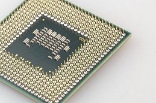

Processor
Processorn anses vara datorns motsvarighet till människans hjärna. Skillnaden är att våra hjärnor fungerar på liknande sätt, medans processorer finns i flera olika typer. Om vi människor blir instruerade att addera fem äpplen med tre äpplen så förstår vi att det blir åtta äpplen. Vissa processorer skiljer sig så mycket att de måste bli instruerade på helt olika sätt för att kunna förstå vad de ska göra. Mjukvarorna måste också anpassas för vilken typ av processor de ska instruera. Processorerna delas därför upp i olika grupper utifrån hur de är uppbyggda. Det finns intel celeron, intel pentium, i3, i5 och i7 processorer. De vanligaste som alla känner till är nog i3,5 och 7, och hur man tar reda på vad man har för processor brukar det oftast stå ett litet klistermärke vid tangentbordet på bärbara datorer där det står intel CORE i5 om du har i5 processor. Du kan också gå in i kontrollpanelen och söka på processor så står det vad du har för processor och ramminne osv. Intel celeron är det sämsta processorn idag den var som instegsprocessoren medan i7 är den mest kraftfulla. Så vad ska jag välja? Tänker du. Det beror helt enkelt på vad du använder din dator till, vill du ha en kraftfull dator och om du kör många program samtidigt eller att du jobbar mycket med stora grafiska program.